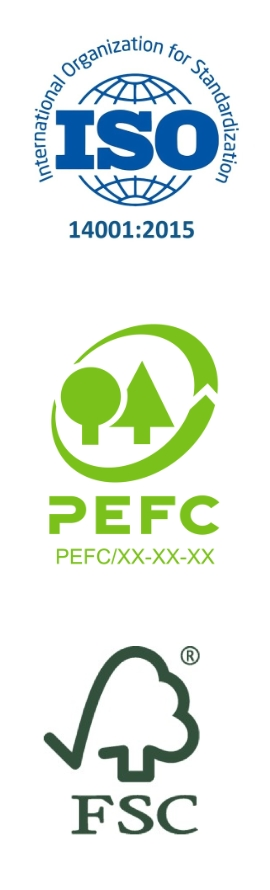
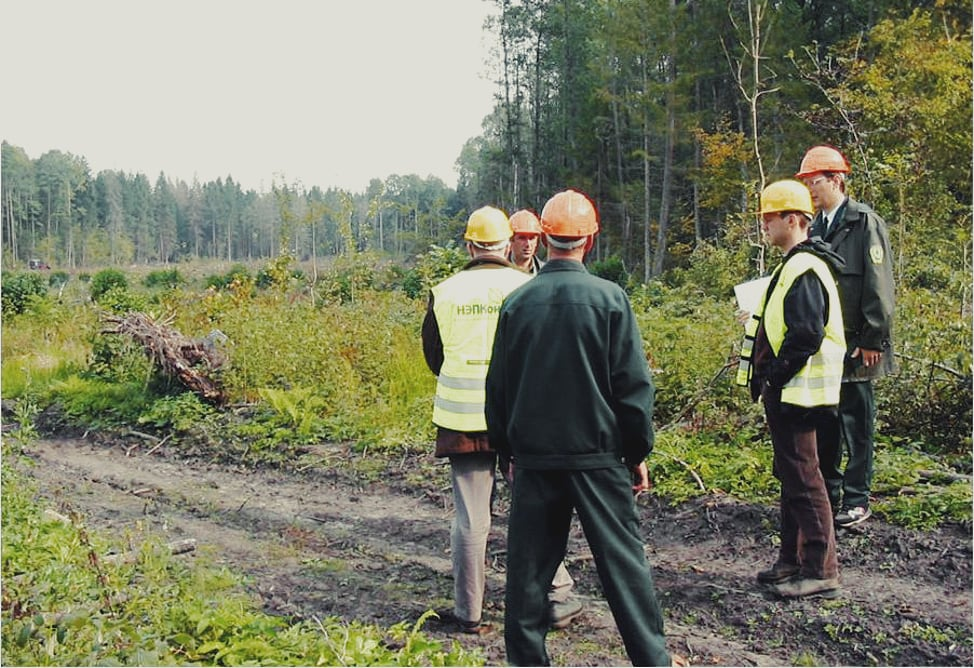
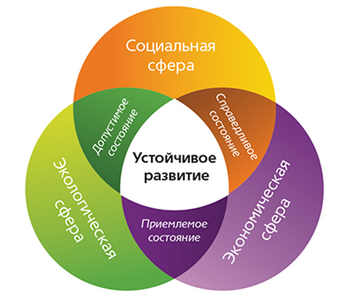
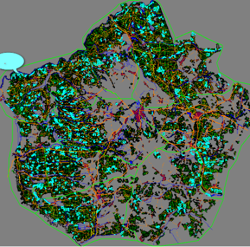
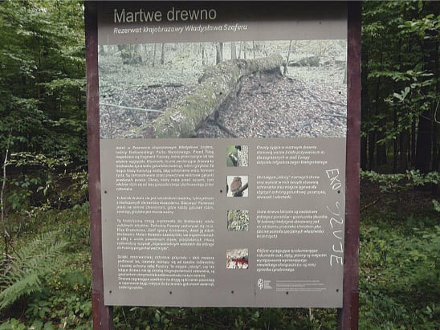

Что такое устойчивое лесоуправление и добровольная лесная сертификация?
Ценность леса не сводится к производству древесины. Лес обеспечивает множество экосистемных услугЭкосистемные услуги — это многочисленные и разнообразные блага, которые люди бесплатно получают из окружающей среды и правильно функционирующих экосистем. Такие блага являются неотъемлемой частью обеспечения чистой питьевой водой, разложения отходов и естественного опыления сельскохозяйственных культур и других растений., которые способствуют созданию здоровой среды обитания человека. Термин «услуги» стал использоваться по отношению к природным ресурсам и процессам с целью оценки их экономической стоимости. Эти услуги, которые люди получают «по умолчанию», долгое время считались бесплатными, в силу чего природопользование носило хищнический и расточительный характер. Последствия такого обращения с природой — биодеградация и истощение ресурсов, загрязнение окружающей среды, изменение климата — человечество сейчас в полной мере ощущает на себе. Растет количество заболеваний, чрезвычайных ситуаций и конфликтов, связанных с загрязнением окружающей среды и изменением климата. В результате этого общество несет в том числе и экономические издержки и, наконец, стало осознавать цену экосистемных услуг.
Все экосистемные услуги сгруппированы в четыре обширных категории:
- снабжение (provisioning). Например, производство воды и продуктов;
- регулирование (regulating) — контроль климата и болезней;
- поддержка (supporting). К примеру, круговорот питательных веществ и опыление сельскохозяйственных культур;
- культура (cultural) — духовные и рекреационные блага.
Леса обеспечивают экосистемные услуги из всех четырех категорий. Они играют важную роль в смягчении последствий изменений климата (наводнений, засух), воздействия шума и загрязнений, поддержании качества воды и плодородия почвы, содействии в борьбе с эрозией. Леса оказывают положительное влияние на качество воздуха, сокращение летней температуры воздуха и снижение ультрафиолетового излучения. Кроме того, лесное биоразнообразие как обеспечивает устойчивость лесных экосистем, так и производит ценную продукцию (помимо древесины). Многие лесные растения являются медоносами, используются в качестве традиционных лекарственных средств и сырья для фармацевтической промышленности.
Понимание многообразия функций и важности роли леса, его здоровья и биоразнообразия требует, чтобы управляющие лесным хозяйством искали компромисс и создавали баланс между производством древесины и предоставлением других экосистемных услуг. Все эти аспекты должны быть приняты во внимание и интегрированы в планирование лесопользования, что влечет за собой изменение практик лесного менеджмента, а также улучшение участия общественности. Заинтересованными сторонами могут быть, например, экологические организации, местные жители, туристические и спортивные организации, научное сообщество и т.д.
Мировое сообщество признало борьбу с глобальным обезлесением одной из самых первостепенных задач. Использование примитивных, зачастую варварских технологий лесозаготовки привело к деградации лесов, сокращению их площади и эрозии почв. По всему миру утрату ценных лесных территорий можно наблюдать в огромном масштабе. Обезлесение привело к снижению биологического разнообразия, к серьезным социальным последствиям для сообществ, зависимых от леса, повлияло на процессы глобального изменения климата, поставило под угрозу исчезновения популяции многих видов животных и растений.
Согласно Отчету WWF Living Forests ReportWWF’s Living Forests Report. WWF, 2015., объемы древесины, получаемые из лесов и плантаций в мире ежегодно, могут увеличиться в три раза до 2050 года. Увеличение объемов лесозаготовок неизбежно даже при развитии вторичной переработки древесины и производной продукции, повторного использования и роста эффективности. Такой рост рынка древесины может как содействовать хорошему управлению лесами, так и уничтожить их.
Поэтому специалисты занялись разработкой и внедрением стандартов устойчивого лесоуправления, методов лесоводства и лесозаготовки, сохраняющих биоразнообразие.
Начало этому процессу было положено в 1989 году, когда Генеральная Ассамблея ООН призвала провести встречу государств по вопросам устойчивого развития. В 1992 году на конференции в Рио-де-Жанейро ООН по окружающей среде и развитию 70 стран подписали документ под названием «Лесные принципыhttps://www.un.org/ru/documents/decl_conv/conventions/forest.shtml» и взяли на себя обязательства разработать научно обоснованные положения по устойчивому развитию лесов. Организация Объединенных Наций, придавая лесным территориям весьма большое значение в мировой повестке дня, повысила приоритетность их проблем, защиты и устойчивого управления и поддерживает государства-члены в усилиях по охране лесов и их устойчивому развитию. Леса должны управляться с целью удовлетворения социальных, экономических, экологических, культурных и духовных потребностей нынешнего и будущих поколений. Следует защищать уникальные образцы лесных территорий. Загрязняющие вещества, наносящие вред лесам, должны контролироваться. В лесохозяйственных планах следует учитывать неэкономическую ценность лесных комплексов и экологические последствия их использования. Следует избегать деградации лесов.
В последующие годы по этой проблеме было проведено много международных конференций и встреч на различном уровне и подписан ряд международных соглашений.
Возможен ли баланс экономической и природоохранной деятельности? Установление такого баланса и является целью устойчивого развития в целом и устойчивого лесного менеджмента в частности.
Устойчивое управление лесными территориями охватывает следующие семь тематических элементов, которые были одобрены Форумом ООН по лесамДобровольные руководящие принципы национального мониторинга лесов. Продовольственная и сельскохозяйственная организация Объединенных Наций. Рим, 2017.:
- объем лесных ресурсов;
- биологическое разнообразие в лесах;
- здоровье и жизнеспособность лесов;
- производительные функции лесных ресурсов;
- защитные функции лесных ресурсов;
- социально-экономические функции лесов;
- правовые, политические и организационные рамки.
Тенденция развития устойчивого лесоуправления и лесопользования в мире связана с несколькими факторами. Во-первых, с обязательствами государств по устойчивому управлению лесами в рамках международных соглашений экологической и социальной направленности. Во-вторых, с накоплением новых знаний о состоянии лесов, позицией международных природоохранных организаций по их сохранению и, как следствие, взятыми на себя Всемирным банком и национальными международными агентствами обязательствами по развитию и поддержке неистощительного лесопользования. В-третьих, с желанием дальновидных лесопромышленников обеспечить долговременное развитие своего бизнеса и улучшить его имидж в глазах потребителей. В-четвертых, с развитием экологической осознанности потребителей продукции в развитых странахРуководство по подготовке к добровольной лесной сертификации в Беларуси / М.В. Ермохин [и др.]. Минск, 2016. 132 с..
Лесной попечительский совет и сертификация FSC
Одним из эффективных инструментов внедрения устойчивого лесопользования является сертификация по системе Лесного попечительского совета (FSC). Стандарты, которые необходимо соблюдать предприятию лесного хозяйства для получения сертификата FSC, основаны на достижении баланса между тремя сферами: экономической, экологической и социальной. Принимая на себя обязательства по соблюдению стандартов, организация подтверждает, что она обеспечивает легальное производство лесоматериалов, не наносит невосполнимый ущерб природе, соблюдает права местного населения.
Можно сказать, что добровольная лесная сертификация является фактором изменений лесного менеджмента, движимым рынком. В развитых странах уже сформировались экологически чувствительные рынки. Это значит, что там растет спрос на товары, произведенные без ущерба природе. Потребители большинства развитых стран мира в настоящее время требуют поставлять им лесоматериалы, произведенные из легального сырья и на основе принципов устойчивого лесопользования. Последнее означает, в числе прочего, что лесопользование должно быть экологически и социально ответственным. Экологически ответственное лесопользование гарантирует, что заготовка лесной продукции не угрожает биоразнообразию, не снижает продуктивность лесов и не ухудшает выполнение лесами их экологических функций. Социально ориентированное лесопользование обеспечивает как местное население, так и общество в целом, материальными и социальными выгодами от лесопользования в долгосрочной перспективе. Не менее важным аспектом является обеспечение транспарентности (прозрачности) управления и участия общественности в принятии решений.
Ключевой предпосылкой для формирования и развития всех видов добровольной лесной сертификации стало развитие экологически чувствительных рынков. Причем речь идет не только об индивидуальных потребителях, но и о бизнес-компаниях (оптовые закупки древесины). Растет число добровольных обязательств со стороны предприятий по уменьшению негативного воздействия на окружающую среду в цепочках поставок продукции. По состоянию на 2016 год более 200 компаний, в том числе более 80 ритейлеровResponsible sourcing of forest products The business case for retailers. WWF Report, 2017., публично заявили об обязательствах использовать сертифицированную древесину. Цели, которые ставят себе такие компании для выполнения этих обязательств, постоянно повышаются. Так, цели ИКЕА по закупкам FSC-сертифицированной продукции в России, Украине и Беларуси увеличились с 40% в 2015 году до 100% в 2017-м.
Первой глобальной программой сертификации лесов стал стандарт SmartWood, запущенный в 1989 году неправительственной организацией Rainforest Alliance. Развитие системы добровольной сертификации в лесном секторе активизировалось после внедрения в 1990-х годах FSC принципа сертификации третьей стороной. Это означает, что сертификация проводится независимыми сертифицирующими организациями, формально не относящимися ни к изготовителю, ни к потребителю продукции. Такой подход вызвал быстрый рост конкурирующих систем сертификации.
В настоящее время в мире существует более 50 добровольных программ сертификации, работающих с различными типами леса и продукции. Одни из них являются международными, другие действуют на территории отдельных стран, например США или Канады.
Логотипы международных программ лесной сертификации ISO, FSC и PEFCОсновными международными программами лесной сертификации, использующимися в Европе, являются ISO 14001 (система международных стандартов), PEFC (ранее известна как Панъевропейская лесная сертификация, Pan-European Forest Certification), позже переименована в Программу по утверждению национальных программ лесной сертификации (Programme for the Endorsement of Forest Certification) и FSC (Forest Stewardship Council, сертификация по системе Лесного попечительского совета).
Лесной попечительский совет (FSC — Forest Stewardship Council) сейчас является мировым лидером на экологически чувствительных рынках. Площадь сертифицированных по системе FSC лесов в мире на 1 декабря 2020 года составила 221,70 млн гаhttps://fsc.org/en/page/facts-figures.
Лесной попечительский совет был создан в 1993 году, а первые леса были сертифицированы в 1996-м. В настоящее время FSC — международное некоммерческое неправительственное объединение с координационным центром в Бонне. Его участники представляют самые разнообразные группы и организации во всем мире (в том числе лесоводы, собственники леса, организации по защите окружающей среды, профсоюзы, предприятия деревоперерабатывающей промышленности, правозащитные организации). Это международная организация, призванная поощрять ведение экологически ответственного, социально ориентированного и экономически эффективного лесного хозяйства.
С этой целью FSC были разработаны 10 универсальных принципов и 56 критериев стабильного и эффективного лесного хозяйства, которые адаптируются к условиям той или иной страны при участии добровольных рабочих групп, формируемых из национальных специалистов. Новая версия принципов и критериев FSC была принята в 2012 году — «Принципы и критерии FSC для управления лесами» FSC-STD-01-001 (V5-0) EN (русскоязычная версия документа доступна на сайте www.fsc.ru). Универсальные принципы остались те же, но увеличилось количество критериев (70, ранее 56). В 2014 году был утвержден дополнительный стандарт — «Единые международные индикаторы FSC» FSCSTD-60-004 V 1-0 EN (русскоязычная версия документа доступна на сайте www.fsc.ru), которые используются при разработке новых национальных стандартов FSC. В Беларуси национальный стандарт находится в стадии разработки, и при оценке используются временные стандарты FSC фирм-аудиторов (органов по сертификации) для нашей страныFSC самостоятельно не проводит сертификацию, а аккредитует аудиторские (сертификационные) компании. Орган FSC по аккредитации — ASI. Основная функция этого органа — аккредитовывать сертификационные компании, а также контролировать качество оказываемых услуг, то есть качество оценки этими организациями. В нашей стране по оценке лесоуправления работают две аудиторские компании: SGS и NEPCon..
В декабре 2013 года в совете FSC была зарегистрирована рабочая группа по разработке национальных стандартов FSC для Беларуси. Она состоит из членов трех палат (экологической, экономической и социальной), координатора рабочей группы и экспертов. Стандарт, после его утверждения Международным центром FSC, заменит собой временные стандарты органов по сертификации. Для Беларуси это Временные стандарты NEPCon (документ доступен на сайте www.nepcon.org) и SGS (документ доступен на сайте www.sgs.com).
В Приложении 1 для ознакомления представлены принципы сертификации по схеме FSC версии 4.0/5.0.
Принципы и критерии FSC — это своеобразный перечень правил устойчивого управления лесами. Предприятие, имеющее сертификат FSC, обязано выполнять все эти принципы и критерии. К сожалению, многолетний опыт мониторинга природоохранных организаций за процессом сертификации FSC в Беларуси показывает, что далеко не всегда это делается. Происходит это по разным причинам. Чаще всего от недостатка знаний, информации о редких видах или биотопах либо несовершенства национальной системы охраны природы, иногда в силу приоритета экономических интересов. Не всегда аудиторские компании вовремя могут выявить все несоответствия. Поэтому в данном контексте так важно участие общественности — активных местных жителей, представителей общественных организаций, научного сообщества.
Работа аудиторской компании в лесу. Фото Георгия КозулькоВажно понимать, что роль общественности — помочь предприятиям эффективно сохранять природу и наладить устойчивый менеджмент лесного хозяйства. По мнению природоохранных организаций, сертификация FSC в настоящее время является наиболее действенным инструментом охраны природы в Беларуси, который могут использовать все, кому не безразлична судьба наших лесов. Для участия в качестве заинтересованной стороны в процессе сертификации FSC необязательно быть специалистом в системе лесной сертификации или лесном хозяйстве. Важно понимать, что вы имеете право влиять на принятие решений по вопросам окружающей среды.
Дополнительные ресурсы В помощь как сертифицируемым предприятиям, так и представителям общественности беларусскими экспертами разработаны практические руководства, к которым мы рекомендуем обращаться за детальными разъяснениями относительно использования конкретных принципов и критериев:
- Руководство по подготовке к добровольной лесной сертификации в Беларуси / М.В. Ермохин [и др.]. Минск, 2016. 132 с.
- Практика охраны природы: практическое руководство для хранителей / сост. А.В. Абрамчук. Брест: Альтернатива, 2016. 152 с.
- В нашем пособии в последующих разделах мы уделим внимание ключевым принципам устойчивого лесоуправления и участия общественности, иллюстрируя их наглядными примерами. Цель — обеспечить базовое понимание того, чем является и чем не является устойчивое лесоуправление, предоставить обзор возможностей для участия общественности и обсудить проблемные вопросы, связанные с вовлечением общественности в нашей стране.
Устойчивое лесопользование: практические аспекты
Модель устойчивого развития: баланс трех приоритетных сферКак было описано в предыдущем разделе, концепция устойчивого развития предполагает обеспечение баланса трех видов целей: экологических, экономических и социальных.
В отношении к устойчивому лесоуправлению баланс этих сфер проявляется следующим образом (www.fsc.ru):
- Экологически приемлемое. Защита и охрана естественных экосистем и лесов высокой природоохранной ценности.
- Социально выгодное. Соблюдение прав работников, местного населения и коренных народов.
- Экономически жизнеспособное. Развитие рынков, оптимизация доходности и обеспечение равной доступности выгод.
Но что это означает на практике? Как отличить устойчивое лесопользование от неустойчивого, если вы не специалист лесного хозяйства?
На фото (рис. 5) представлен конкретный пример последствий неустойчивого лесопользования. Сплошные рубки и последующая сплошная посадка лесокультур (плужная технология посадки леса) приводит к уничтожению редкого вида растения, занесенного в Красную книгу Беларуси (хохлатка полая). Это обычная практика неустойчивого ведения лесного хозяйства, исходящая из одностороннего, потребительского и недальновидного отношения к лесу лишь как к источнику древесины.
Переход к устойчивому управлению в лесном хозяйстве означает переход от практик, которые уничтожают биоразнообразие, к практикам, которые сохраняют его. Для этого необходимо перестать рассматривать лес лишь как источник древесины и начать видеть его во всем многообразии функций, дающих жизнь. Это приведет к отказу от практики посадки лесных культур экологически грубой плужной технологией с сильным повреждением почвенного покрова, так как цель ее применения — технологически легкое воспроизводство коммерческой древесины, сопровождающиеся значительным уничтожением биоразнообразия.
Особенно неустойчивой и антиэкологичной является практика посадки лесных монокультур. Согласно экологическому правилу Юджина Одума (правило монокультуры)Сельскохозяйственная экология. Н.А. Уразаев и др. М., Колос, 2000; Unifying Concepts in Ecology: Report of the plenary sessions of the First international congress of ecology, The Hague, The Netherlands, September 8–14, 1974., эксплуатируемые для нужд человека системы, представленные одним видом, неустойчивы по своей природе. Любая монокультура не обладает свойствами самоподдержания, самовосстановления и саморемонта. Монокультурное лесное насаждение больше рискует в случае ветровала, пожара или нашествия вредителей. Сажать разные породы леса — современная практика, но пока лесные хозяйства укоренили ее не везде.
С точки зрения устойчивого лесоуправления ценной является практика естественного возобновления леса. Лес можно вырубить постепенным способом так, чтобы были окна для семян, которые появляются у оставшихся деревьев в семенной год. Через несколько приемов рубки верхний полог исчезает, но остается нижний, состоящий из разных пород разного возраста. Есть и другие способы рубок, помогающих естественному восстановлению. Это и экономически может оказаться более выгодно: можно снизить затраты на выращивание посадочного материала в питомниках, не проводить распашку, посадку и закупку сеянцев, оплачивая всякий раз труд людей.
Экосистемы предоставляют физическую основу («экос» — дом) как для жизни людей, так и для их хозяйственной деятельности. При деградации экосистем невозможно обеспечить ни приемлемое качество окружающей среды и жизни для людей, ни эффективную экономическую деятельность. Исторически сформировался приоритет экономических интересов, что, по сути, и привело к неустойчивому положению вещей. Именно с осознания глобальных рисков человечеству, связанных с проблемами окружающей среды, был начат процесс развития и внедрения концепции устойчивого развития.
В качестве примера преобладания экономического приоритета при принятии решений можно привести случаи строительства дорог в лесных хозяйствах. Наиболее резонансные случаи в Беларуси за последнее время — строительство лесохозяйственных дорог на территории республиканского ландшафтного заказника «Ольманские болота» и национального парка «Припятский»«Лес — это не месторождение брёвен». Зачем в Беларуси строят лесные дороги. https://bahna.land/ru/lesa/les-eto-ne-mestorozhdenie-breven-zachem-v-belarusi-stroyat-lesnye-dorogi. По мнению природоохранных организаций, дороги провели с единственной целью — рубить в ранее труднодоступных местах. В результате это усилило усыхание пойменных дубрав: участки отрезали от пойм, и на них нарушился гидрологический режим. Таким образом, стремление к немедленному и максимальному получению экономической выгоды ставит под угрозу саму возможность ведения этой деятельности в будущем — существование полноценного леса. Это безразличие к будущему своих детей и внуков.
На рис. 6-8 представлены иллюстрации изменения подхода к лесопользованию в Беларуси на протяжении последних 10-15 лет (фото предоставлены ведущим аудитором компании «НЭПКон» Георгием Козулькоhttp://bp21.org.by/ru/ff/FSC for all.zip). Около десятка лесхозов и природоохранных учреждений (нацпарков) Беларуси уже осуществили этот переход к устойчивому ведению лесного хозяйства и достигли отличных экологических результатов. Более 90 лесхозов участвуют в процессе лесной сертификации с учетом требований FSC, что позволяет обеспечивать в той или иной степени сохранение биоразнообразия и здоровья леса.
Долгосрочная цель устойчивого лесоуправления — сложные по составу и структуре леса с богатым биоразнообразием. При таком способе лесоуправления при сохранении участков для использования в коммерческих целях одновременно будут сохраняться участки, подобные лесам заповедным (рис.9). На таких участках леса будет много деревьев-великанов, крупномерной мертвой древесины, уникальных микроучастков с дикой природой и другими природными ценностями. Там богатейшее биоразнообразие. Это можно сделать в каждом лесхозе.
В результате устойчивого лесоуправления в каждом лесхозе и на каждом участке леса возможно создание элементов национальной экологической сети, ядра которой (ООПТ и другие ценные лесные территории) соединены между собой экологическими коридорами. Эти коридоры создают возможности для миграции биологических видов и обмена генетической информацией между изолированными популяциями.
Достигнуть этого можно с помощью создания и сохранения репрезентативных участков. Это своего рода микрозаповедники на территории лесхозов, эталоны дикой природы и естественных процессов. Репрезентативные участки должны занимать не менее 5% от лесной площади лесхозаВ новом стандарте — «занимают не менее 5%, а в совокупности с другими составляющими сети охраняемых объектов — не менее 10% площади».. В них запрещается хозяйственная деятельность, за исключением особых (редких) случаев, когда это требуется для сохранения или увеличения сохраняемых ценностей. При правильном выделении репрезентативные участки в дополнение к уже существующим крупным ООПТ создают густую сеть малых территорий с сохраняемой дикой природой, что в итоге значительно повышает общий природоохранный эффект.
Карта репрезентативных участков (обозначены голубым цветом), где они равномерно распределены по всей территории Дятловского лесхоза, Гродненская область. Предоставлена Георгием Козулько
Таким образом, при внедрении устойчивого лесного менеджмента возможно достижение разумного баланса между сохранением природы и хозяйственной деятельностью человека.
Благодаря процессу внедрения добровольной лесной сертификации лесоуправление в Республике Беларусь становится более экологически ответственным. Однако социальным аспектам устойчивого лесопользования (работа с людьми) до сих пор не уделялось достаточно внимания в лесном секторе. Между тем без понимания людьми (как государственными служащими, так и местными жителями) принципов устойчивости, важности биоразнообразия, многообразия функций леса, взаимозависимости человека и природы невозможно обеспечить эффективность деятельности, нацеленной на устойчивое развитие. Информирование, обучение, вовлечение в совместное планирование с заинтересованными сторонами являются необходимыми элементами для преодоления устоявшихся практик, приносящих ущерб окружающей среде.
В качестве примера можно привести ущерб, который наносится беларусской природе под видом «наведения порядка» в лесу и вдоль дорог. Устоявшиеся представления о «порядке» как стерильности, недостаток понимания экологических закономерностей порождают и поддерживают практики, которые уничтожают богатство и биоразнообразие беларусского леса. До сих пор в Лесном кодексеhttps://gosinspekciya.gov.by/actual/lesopolzovanie-i-zashchita-lesa/352/ сохраняется понятие такой категории рубок, как «уборка захламленности» — очистка лесных насаждений от сухостойных, валежных и (или) ветровально-буреломных деревьев и их частей. С точки зрения устойчивого лесопользования это зачастую экономически бессмысленная и вредоносная для биоразнообразия практика.
Не учитывая человеческий фактор, невозможно добиться устойчивых изменений в практиках природопользования. Обучение государственных служащих, работников лесного хозяйства, активная просветительская работа с местным населением, вовлечение местных жителей в управление лесным хозяйством, включая сертификацию FSC, учет интересов местных сообществ и их зависимости от леса позволят сделать лесной менеджмент устойчивым, эффективным, нацеленным на сохранение природы и учитывающим потребности конкретных сообществ. Так как в задачи сертифицирующего органа не входит обучение, важно вовлечение широкого круга заинтересованных сторон. В их число могут входить общественные организации, консалтинговые фирмы, администрации ООПТ, учреждения образования и т.п.
Пример просветительской работы с населением в Польше — плакат возле дороги о роли мертвой древесины в лесу. Фото Георгия Козулько
Еще один пример влияния социального фактора на состояние лесов — это ущерб, который могут приносить лесу браконьерство, сбор грибов и ягод варварскими методами с целью продажи. Продукты леса могут являться важными источниками средств существования сельских жителей, причем эти продукты используются как для собственного потребления, так и для получения денежного дохода. Устойчивое управление в лесном секторе должно учитывать вклад лесов в обеспечение жизнедеятельности сельских сообществ. На сельских территориях, удаленных от городов, повышается экономическая зависимость местных жителей от продуктов леса (ягоды, грибы). Однако поскольку использование их как для собственного потребления, так и для получения денежного дохода является «скрытым добываемым продуктом», очень важно обеспечить обмен коммуникацией администраций ООПТ и лесхозов с местными жителями, чтобы понимать их нужды, потребности и интересы. Вовлечение общественности в лесной менеджмент позволит получать от местных жителей ценную информацию о лесе, предоставлять им своевременную информацию о планах лесного хозяйства, просвещать их о принципах устойчивого хозяйствования и важности сохранения биоразнообразия, вовлекать в процессы мониторинга, сертификации, планирования и принятия решений.
Международный союз охраны природы (IUCN — International Union for Conservation of Nature) отмечает, что управление лесами в Республике Беларусь в целом основано на принципах устойчивости и относительно сбалансированного лесопользования, однако социальные аспекты устойчивого лесопользования не были тщательно рассмотрены заинтересованными сторонами в лесном сектореhttps://www.iucn.org/theme/forests/our-work/locally-controlled-forests/forest-law-enforcement-governance/belarus. Тематика социального аспекта устойчивого лесоуправления практически выпала из поля зрения научного обеспечения отрасли, за исключением вопросов экотуризма и культурного наследия. В то же время понимание социальных аспектов позволяет установить степень зависимости сельских жителей от леса и выявить местные особенности использования лесных продуктов, найти способы повышения уровня многоцелевого лесопользования, эффективнее привлекать общественность к вопросам устойчивого лесоуправления.
Проведенные IUCN в 2014 году исследования зависимости сельских жителей Беларуси от лесаЗависимость сельских сообществ в Республике Беларусь от лесов. На основе ситуационного исследования, проведенного в сельских сообществах Буда-Кошелева, Гомеля и Милашевичей (Гомельская область). Автор — Марина Сергеевна Лазарева. Гомельский государственный университет, 2014 г. http://www.enpi-fleg.org/site/assets/files/1911/by_ff_study_nat_rep_rus_final.pdf показали, что зависимость местного населения от леса более чем в четыре раза выше в поселениях, расположенных вдали от больших городов, на территории с высоким лесным покрытием. В этих регионах массовый сбор лесного урожая в основном наблюдается в целях продажи. Собранный урожай продается частным заготовителям по низким ценам, и последние перепродают сырье, в том числе за границу. Так как закупочные цены являются низкими, местные жители стараются собрать как можно больше, зачастую используя запрещенные методы сбора, таким образом нанося ущерб ягодникам. В целом в Беларуси, как и во всем мире, зависимые от леса сообщества могут истощать природные ресурсы.
Это обстоятельство необходимо учитывать при планировании и ведении лесного хозяйства. Необходимо выявление всех существенно зависящих от леса сообществ и принятие мер по их поддержанию. Однако эти меры невозможно реализовать лишь подходом «сверху вниз». Поддержка общественных и частных инициатив местных жителей является необходимым элементом для развития жизнеспособности и устойчивости сельских сообществ. Необходимо также вовлечение местных жителей в устойчивое управление лесами и охрану природы.
IUCN было проведено также региональное исследование зависимости сельских сообществ от лесаРегиональное исследование по теме «Использование продуктов леса сельскими домохозяйствами и их зависимость от этих продуктов на Южном Кавказе, в Восточной Европе и России». Рийонг Ким Баккегаард. Ноябрь 2014 г. http://www.enpi-fleg.org/site/assets/files/1733/forest_dependency_regional_report_ru.pdf, которое ставило своей целью определить взаимоотношения и взаимодействие людей с окружающими их природными ресурсами. Данный анализ — один из первых по составлению характеристики использования лесных ресурсов в северных умеренных и бореальных лесах в странах, где осуществляется переход к новой экономике после десятков лет советской власти. Постоянной тенденцией здесь является миграция и старение населения. Величина средней зависимости от леса в регионе равна 10,3%, при этом колебание по странам составляют от 5% до 17% и даже выше по различным районам исследования. Дрова остаются важным продуктом леса для сельских сообществ. Ягоды и грибы являются значительным источником денежного дохода; некоторые домохозяйства используют его в качестве дополнения к другим источникам прибыли. Анализ показал, что лесной доход составляет существенную долю в общем бюджете более бедных домохозяйств, соответственно, более бедные домохозяйства больше зависят от леса.
Важно, что большинство сообществ считают, что продукты леса сокращаются. В качестве основных причин приводятся такие, как интенсивная эксплуатация леса, незаконные рубки и изменение климата. Среди причин сокращения урожая клюквы назывались слишком интенсивный сбор ягод «неместными» сборщиками, хищнические методы сбора (использование специальных скребков, которые значительно ускоряют процесс, но повреждают растения, тем самым сокращая урожай следующего года), а также изменение климата, которое оказывает негативное влияние на распространение лесных продуктов. Эти факторы представляют собой реальную угрозу рациональному использованию лесных продуктов и негативно влияют на жизнеобеспечение сельских жителей. Например, сбор клюквы в Беларуси сокращается из-за высыхания болот, на которых она растет. Эти ягоды — источник значительных денежных доходов местных жителей, которые они могут потерять.
Таким образом, в контексте устойчивого лесного управления важно понимать, в какой степени люди зависят от леса, что они думают о положении дел в лесном хозяйстве. Исследование ясно демонстрирует, что леса и окружающая среда обеспечивают сельские домохозяйства важными для них ресурсами, а также, что люди все больше осознают экологические проблемы и необходимость охраны природы. Это указывает на необходимость не только учитывать потребности сельских сообществ, но и вовлекать их в процессы лесного управления, мониторинга состояния окружающей среды и охрану природы.